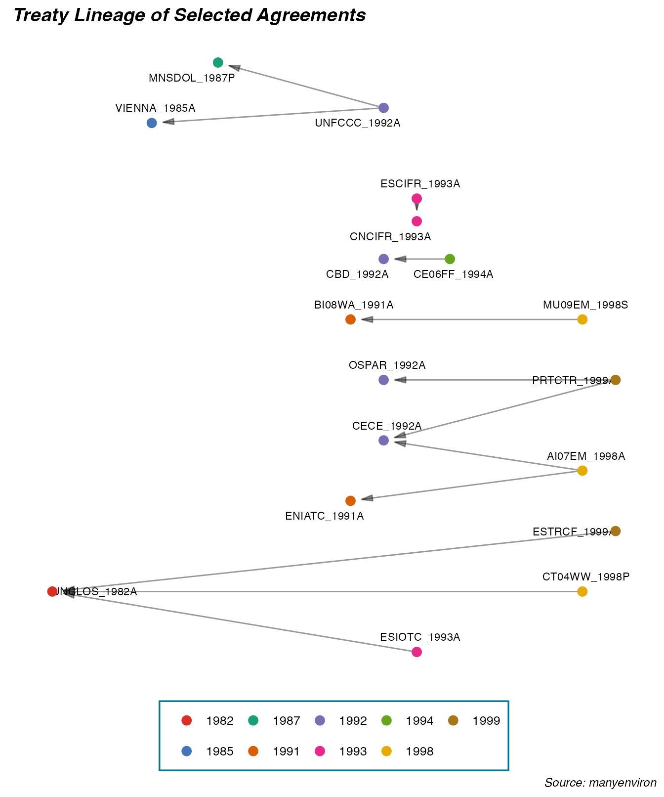

How Do Environmental Treaties Connect?
2021-11-25
connect.RmdManyenviron Data
{manyenviron} stores several datasets on various aspects of environmental treaties in different databases. For example, the Agreements database is made of multiple datasets of environmental treaty titles with specific information such as the agreement type (e.g. agreements, protocols, amendments, declarations), if they are bilateral or multilateral, and some important dates such as the signature or entry into force. The Memberships database contains lists of countries with the treaties to which they are parties to. It also includes information on the signature date of the treaty or the withdrawal date of a party. The References database is composed of a dataset that indicates the relationship (e.g. amended by, cites, superseded by) between two treaties. Finally, the Texts database stores the text of environmental treaties.
For a quick overview of the database and dataset in {manyenviron}, we can use the data_contrast() function from {qData}.
library(qData)
qData::data_contrast("manyenviron", "agreements", "IEADB")
qData::data_contrast("manyenviron", "memberships")To view the bibliographic references for a dataset, a database, or the whole package, we can also use code_source() from {qData}.
qData::data_source("manyenviron", "agreements", "IEADB")
qData::data_source("manyenviron", "memberships")
qData::data_source("manyenviron")Connecting Environmental Treaties
There are many different ways in which treaties could be linked. For example, a treaty can be substituted by another, complemented by protocols, changed through amendments, and/or cite another treaty. To facilitate the identification and connection between the databases in the package, the manypkgs::code_agreements() function has been developed to generate a qID for treaties in a database. Each of the {manyenviron} dataset contains a qID column. To understand what are the information provided through by the qID, as well as the benefits of using qID to spot the relationships between the treaties across several datasets in a database, please visit this article on the {manypkgs} website.
Below are two examples of how to visualise treaty linkages for the references and the memberships databases in {manyenviron}. We use migraph to create the network plots, more information about the package can be found here.
Visualising How Agreements Connect by References
The graph below illustrates a sample of earliest 25 treaties from the references database. We select only treaties that cite other treaties. The qIDs are used to facilitate the reading and illustration of the relationships.
library(dplyr)
library(ggplot2)
library(migraph)
# Get dataset
references <- manyenviron::references$ECOLEX_REF %>%
dplyr::distinct() %>%
dplyr::mutate(year = stringr::str_extract(qID2, "[:digit:]{4}")) %>%
dplyr::filter(RefType == "Cites") %>%
dplyr::arrange(year)
# Plot with migraph
migraph::gglineage(references[1:25,c(1,2,3)]) +
labs(title = "Treaty Lineage of Selected Agreements",
caption = "Source: manyenviron") +
theme(plot.title = element_text(family = "sans",
size = 18,
hjust = 0.5))
We can also take a look at a single lineage of Enviromental treaties. Let’s look at treaties that ammend the Ramsar Convention on Wetlands of International Importance Especially as Waterfowl Habitat (“RAMSA_1971A”).
# Subset dataset
ramsa <- manyenviron::references$ECOLEX_REF %>%
dplyr::distinct() %>%
dplyr::mutate(year = stringr::str_extract(qID2, "[:digit:]{4}")) %>%
dplyr::filter(RefType == "Amends" & qID2 == "RAMSA_1971A") %>%
dplyr::arrange(year)
# Get agreement titles
agreementtitles <- manyenviron::agreements$ECOLEX %>%
dplyr::select(Title, qID) %>%
dplyr::rename(qID1 = qID)
# Join information
ramsa <- dplyr::left_join(ramsa, agreementtitles, by = "qID1")
ramsa$qID2 <- "Ramsar Convention on Wetlands of International Importance Especially as Waterfowl Habitat - 1971"
ramsa$Title <- paste0(ramsa$Title, "-", stringr::str_extract(ramsa$qID1, "[:digit:]{4}"))
ramsa <- dplyr::relocate(ramsa, qID2, Title)
# Plot with migraph
migraph::gglineage(ramsa) +
labs(title = "Treaties that Amend the Ramsar Convention",
caption = "Source: manyenviron") +
theme(plot.title = element_text(family = "sans",
size = 18,
hjust = 0.5))
Visualising How Agreements Connect by Country Membership
The graph below illustrates the connection between parties and treaties for environmental agreements signed into force in two points in time, 1960 and 1980, using the memberships database. In the graph, countries are represented by the dots, the treaties by the squares, and memberships by the edges. qIDs are also used to refer to treaty titles.
# Subset dataset
membership_1960 <- manyenviron::memberships$IEADB_MEM %>%
dplyr::mutate(year = stringr::str_extract(qID_ref, "[:digit:]{4}")) %>%
dplyr::filter(year == "1960") %>%
dplyr::select(qID, CountryID, Title) %>%
migraph::as_tidygraph()
# Plot with migraph
migraph::autographr(membership_1960) +
ggplot2::labs(title = "Membership in Environmental Treaties\nSigned in 1960",
caption = "Source: manyenviron") +
ggplot2::theme(plot.title = ggplot2::element_text(family = "sans",
size = 18,
hjust = 0.5))
# Subset dataset
membership_1980 <- manyenviron::memberships$IEADB_MEM %>%
dplyr::mutate(year = stringr::str_extract(qID_ref, "[:digit:]{4}")) %>%
dplyr::filter(year == "1980") %>%
dplyr::select(qID, CountryID, Title) %>%
tidyr::drop_na() %>%
migraph::as_tidygraph()
# Plot with migraph
migraph::autographr(membership_1980) +
ggplot2::labs(title = "Membership in Environmental Treaties\nSigned in 1980",
caption = "Source: manyenviron") +
ggplot2::theme(plot.title = ggplot2::element_text(family = "sans",
size = 18,
hjust = 0.5))
Visulaizing the Plots in 3D
Visualizing the network in 3D is a neat way of presenting your data in HTML documents. This allows you to let the visitors of your site interact with your network by allowing them to move things around. To get there, we leverage the {threejs} package, an interface between R and the eponymous JS library.
We will use the membership data for agreements signed in 1980 from above and set a node attribute lvl identifying the set a node belongs to. We then move on to subsetting the graph by only retaining the biggest component and applying the layout_as_multilevel() function. We finally make some cosmetic adjustments before rendering the graph. (Note that you can hover over a node to display its name!)
library(igraph)
library(threejs)
library(graphlayouts)
# Set node attributes "lvl" to separate between countries and agreements
V(membership_1980)$type <- if_else(nchar(V(membership_1980)$name) == 3,
TRUE,
FALSE)
V(membership_1980)$lvl <- if_else(V(membership_1980)$type, 2, 1)
# Subset the graph to only include the biggest component
components <- igraph::components(membership_1980)
biggest_component_id <- which.max(components$csize)
vert_ids <- V(membership_1980)[components$membership == biggest_component_id]
membership_1980 <- igraph::induced_subgraph(membership_1980, vert_ids)
# Define the 3D layout
membership_1980$layout <- graphlayouts::layout_as_multilevel(membership_1980, type = "all",
alpha = 25, beta = 45,
project2D = FALSE)
V(membership_1980)$color <- c("#014D23", "#36648A")[V(membership_1980)$lvl]
V(membership_1980)$vertex.label <- V(membership_1980)$name
# Render the graph
graphjs(membership_1980, main = "Membership in Environmental Treaties Signed in 1980",
bg = "white", vertex.label = V(membership_1980)$vertex.label,
vertex.size = ifelse(V(membership_1980)$lvl == 1, 0.8, 2),
vertex.shape = ifelse(V(membership_1980)$lvl == 1, "square", "sphere"),
top = 1, left = 45, font.main = "18px Arial", brush = TRUE)Projecting the Network on a Globe:
Let’s look at what the “country projection” of the bimodal network above looks like on a globe. Note that projections as such can sometimes obscur information about the underlying bimodal network. There are essentially two elements we need for this visualization. First, the country projection of treaties signed in 1980 which we computed before. Second, a dataframe of the centroids of every country in the world which we get from the rgeos and the rworldmap packages. Once we have these elements, we merge them to create dataframe for the arcs to be displayed in the globejs() visualization. Finally, we adjust colors and inital longitude and latitude for the plotted globe.
library(rgeos)
library(rworldmap)
library(tidyr)
# Create the projection
membership_1980 <- migraph::project_cols(membership_1980)
membership_1980 <- igraph::get.data.frame(membership_1980, "edges")
# Get the coordinates of the centroids of each territory
wmap <- getMap(resolution="high")
centroids <- gCentroid(wmap, byid=TRUE)
centroids$ID <- countrycode::countrycode(rownames(as.data.frame(centroids)),
"country.name", "cowc")
centroids <- dplyr::as_tibble(centroids) %>%
dplyr::rename(lat = y, long = x) %>%
tidyr::drop_na(ID)
# Merge centroids and links dataframes
merged <- merge(centroids, membership_1980, by.x = "ID", by.y = "from")
merged <- dplyr::rename(merged, origin_long = long, origin_lat = lat)
merged <- merge(centroids, merged, by.x = "ID", by.y = "to")
merged <- dplyr::rename(merged, dest_lat = lat, dest_long = long,ID_from = ID, ID_to = ID.y) %>%
dplyr::relocate(ID_from, ID_to, origin_lat, origin_long, dest_lat, dest_long)
# Create arcs dataframe
keeps <- c("origin_lat", "origin_long", "dest_lat", "dest_long")
arcs <- merged[keeps]
# Visualize
threejs::globejs(lat=merged$dest_lat, long=merged$dest_long,
arcs = arcs, bodycolor = "#aaaaff",
rotationlong = 200, rotationlat = -100,
arcsHeight = 0.3, arcsLwd = 2.5,
arcsColor = "#2fff00", arcsOpacity = 0.15,
atmosphere = TRUE, color="#00aaff", pointsize = 0.5)